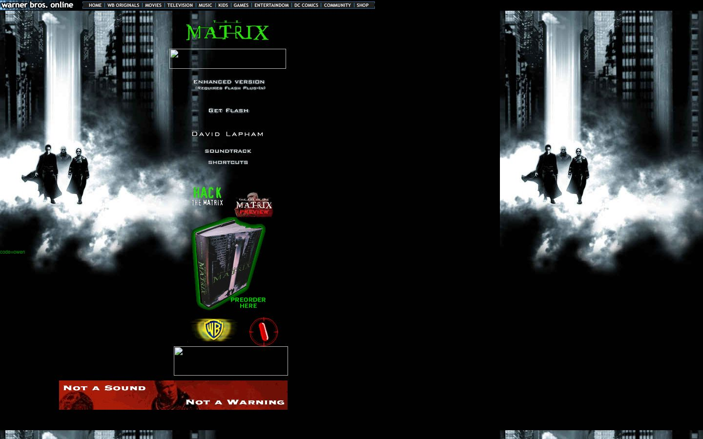

References / Website / 351
The Matrix website, 2000
The official site of The Matrix in December 2000: a black page with the green film logo, spaced capital menu items, and film stills.
- Source
- whatisthematrix.warnerbros.com (archived copy)
- Creator
- Warner Bros.
- Made
- 2000 (capture date, 6 December 2000)
- Styles
- Y2K aesthetic (agent-proposed, not yet reviewed by a person), Cyberpunk (agent-proposed, not yet reviewed by a person)
- Moods
- Dark, cyber, techno
- Evidence
- Captured from the Internet Archive with
tools/capture.mjs(headless Chrome, 1440 × 900) on 28 September 2026 and inspected. Two image boxes in the center column did not load (probably Flash or ad slots); they cover less than a quarter of the page. - Reviewed
- Rights
- Third-party work, stored with credit for commentary. License: unverified. Rights policy
The live site no longer exists. This is an archived copy of the HTML page; the site’s separate Flash version was not captured.
Observed
- The page is black. A film still of the three main characters walking out of fog between dark skyscrapers fills the left column and repeats at the right.
- “MATRIX” is at the top in thin, glowing green capitals.
- Menu items such as “ENHANCED VERSION”, “GET FLASH”, “SOUNDTRACK”, and “SHORTCUTS” are small white capitals with wide spacing.
- “HACK THE MATRIX” is in green condensed capitals; a book cover sits in a green glowing outline with “PREORDER HERE”.
- A red pill in a red target circle and a gold Warner Bros. shield sit below. A red banner reads “NOT A SOUND / NOT A WARNING”.
Why it belongs
The site shows the dark, cyber end of the Y2K range around 1999–2000: glowing green type and spaced capitals, but film photography instead of rendered objects.
It is useful as an edge case between Y2K and later cyberpunk revivals.
Measured
Machine-extracted by tools/extract-traits.js on . Full measurement.
- Median radius
- null px
- Mean chroma
- 0
- Palette
- #ffffff 100%

